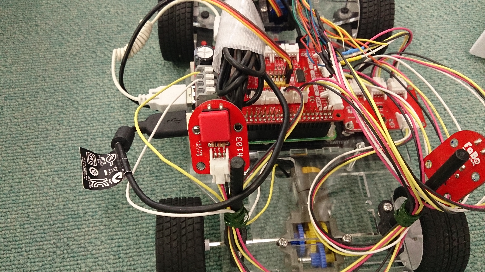

【タイトル】
レベル1：ロボットカー走行デモ
【目標】
3つの距離センサーから値を取得し、Neaural Networksで進行方向を判断してロボットカーを自走させる
【画像】


【実行環境】
* Fabo TYPE1 ロボットカー
* Fabo #605 Motor Shield Raspberry Pi Rev 1.0.1
* Fabo #902 Kerberos ver 1.0.0
* Fabo #1202 Robot Car Rev. 1.0.1
* Fabo #103 Button
* VL53L0X or Lidar Lite v3
* Tower Pro SG90
* Raspberry Pi3
* Stretch Lite or Jessie Lite
* docker
* Ubuntu
* Python 2.7
* FaBoPWM-PCA9685-Python
* FaBoGPIO-PCAL6408-Python
* VL53L0X_rasp_python
* Tensorflow r1.1.0
【動画】
走行デモ動画：
【実行】
* インストール方法
* コースの準備
* 実行方法
【目次】
* 必要なコードとファイル
* [Python] level1_carの自走コードを元に修正する
* Neural Networksの判断処理を追加する
* 開始ボタン
* ディレクトリとファイルについて
インストール方法
インストール済みのロボットカーを用意しているので省略します。
コースの準備
コースとなる壁は、距離センサーが発するレーザーが反射できるような素材で作ります。
足元での突起物となるので、人がぶつかった時の安全性や価格、レイアウト変更のしやすさ、修復しやすさを考えて画用紙とクリップで作ってあります。
ジグザグに織ることで、収納しやすさ、立たせやすさ、レイアウト変更のしやすさ、レーザー反射しやすさも獲得しています。
道幅は直線なら狭くても大丈夫ですが、カーブでは側面にセンサーが付いていないため、内側を巻き込みやすくなっています。
そのため、カーブは広めに作り、狭い道への入り口も誘導しやすいように広めに作っておきます。
実行方法
1. ロボットカーのRaspberry Pi3にログインします
USER:pi
PASSWORD:raspberry
ssh pi@192.168.xxx.xxx
2. rootになってdockerコンテナIDを調べます
sudo su
docker ps -aCONTAINER ID IMAGE COMMAND CREATED STATUS PORTS NAMES
2133fa3ca362 naisy/fabo-jupyter-armhf "/bin/bash -c 'jup..." 3 weeks ago Up 2 minutes 0.0.0.0:6006->6006/tcp, 0.0.0.0:8091->8091/tcp, 0.0.0.0:8888->8888/tcp hardcore_torvalds
STATUSがUpになっているコンテナIDをメモします。
3. dockerコンテナにログインします
docker exec -it CONTAINER_ID /bin/bash
docker exec -it 2133fa3ca362 /bin/bash
CONTAINER_IDにはベースイメージがnaisy/fabo-jupyter-armhfの2133fa3ca362を使います。
4. ロボットカーのディレクトリに移動します
cd /notebooks/github/RobotCarAI/level1_demo/
lstotal 48
160769 4 ./ 127297 4 README.md 160770 4 fabolib/ 160772 4 model/ 141770 4 start_button.py
123628 4 ../ 160804 4 document/ 160771 4 lib/ 141769 16 run_car_ai.py
5. ロボットカーを起動します
python start_button.py
6. 走行開始するには、ロボットカーの青いボタンを押します

7. 走行停止するには、ロボットカーの赤いボタンを押します

Ctrl + c でstart_button.pyを終了します
必要なコードとファイル
走行に必要なコードは以下になります。
* ライブラリ
* ./fabolib/以下
* ./lib/以下
* 学習済みモデル
* ./model/以下
* 実行コード
* start_button.py 開始ボタンコード
* run_car_ai.py level0のrun_car_if.pyを元に修正
[Python] level1_carの自走コードを元に修正する
Neural Networksの判断処理を追加する
AI判断を追加し、ジェネレータの判断は不要なのでコメントアウトしておきます。
車両自走コード：./run_car_ai.py
1 2 3 4 5 6 7 8 9 10 11 12 13 14 15 16 17 18 19 20 21 22 23 24 25 26 27 | from lib.ai import AI #from generator.labelgenerator import LabelGenerator ... # AI準備 ai = AI("car_model_100M.pb") SCORE = 0.6 # スコア閾値 # IF準備 (学習ラベル ジェネレータ) #generator = LabelGenerator() ... ######################################## # AI予測結果を取得する ######################################## # 今回の予測結果を取得する ai_value = ai.get_prediction(sensors,SCORE) print("ai_value:{} {}".format(ai_value,sensors)) # 予測結果のスコアが低い時は何もしない if ai_value == ai.get_other_label(): time.sleep(LIDAR_INTERVAL) continue ######################################## # IF結果を取得する ######################################## # 今回の結果を取得する #generator_result = generator.get_label(sensors) #ai_value = np.argmax(generator_result) |
開始ボタンコードも修正します。
開始ボタンコード：./start_button.py
1 | cmd = "python "+os.path.abspath(os.path.dirname(__file__))+"/run_car_ai.py" |
あとはlevel1_car同様に開始ボタンコードを実行します。
python start_button.py
ディレクトリとファイルについて
- ディレクトリについて
- document/ ドキュメント関連
- fabolib/ Fabo製基板関連
- lib/ SPI,AIライブラリ
- ファイルについて
- README.md このファイル
- run_car_ai.py 自動走行コード
- start_button.py 開始ボタンコード